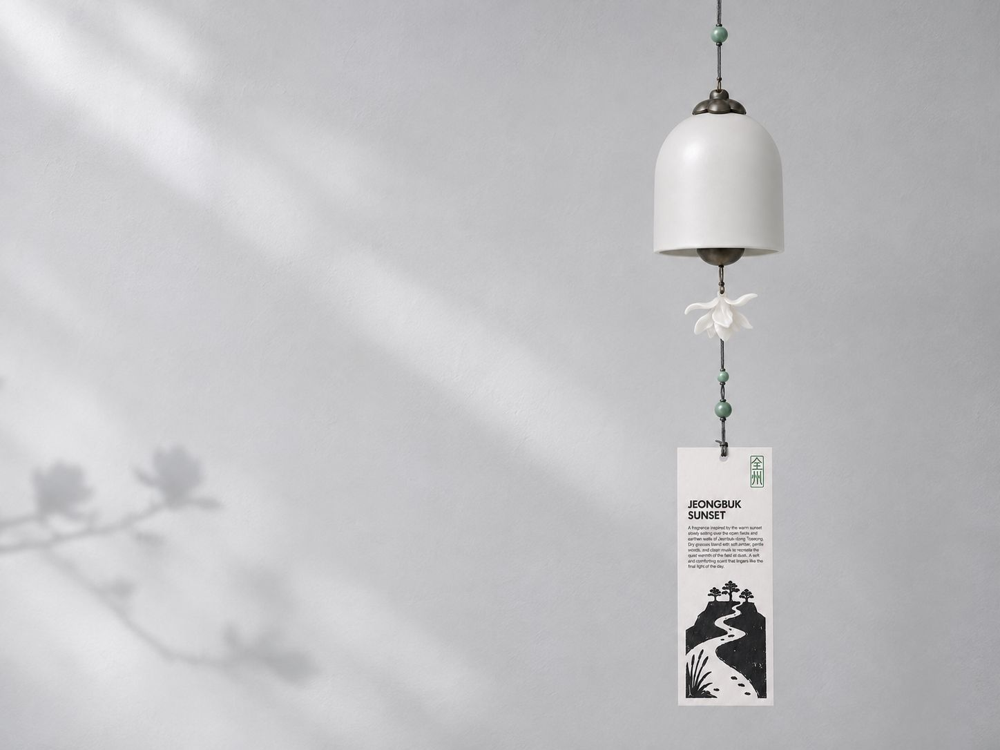
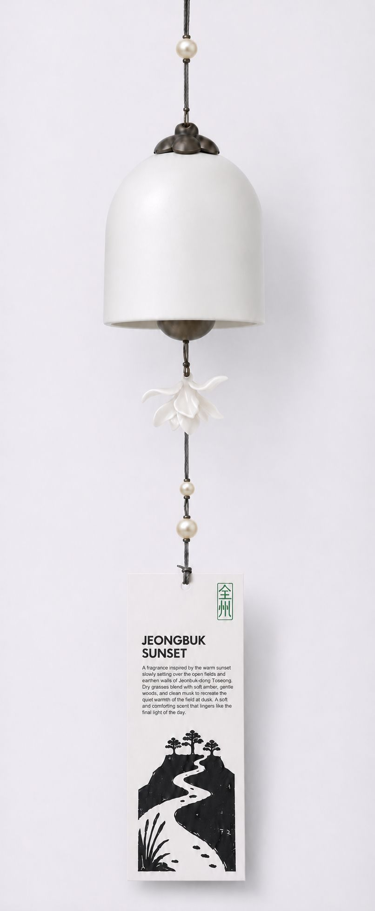
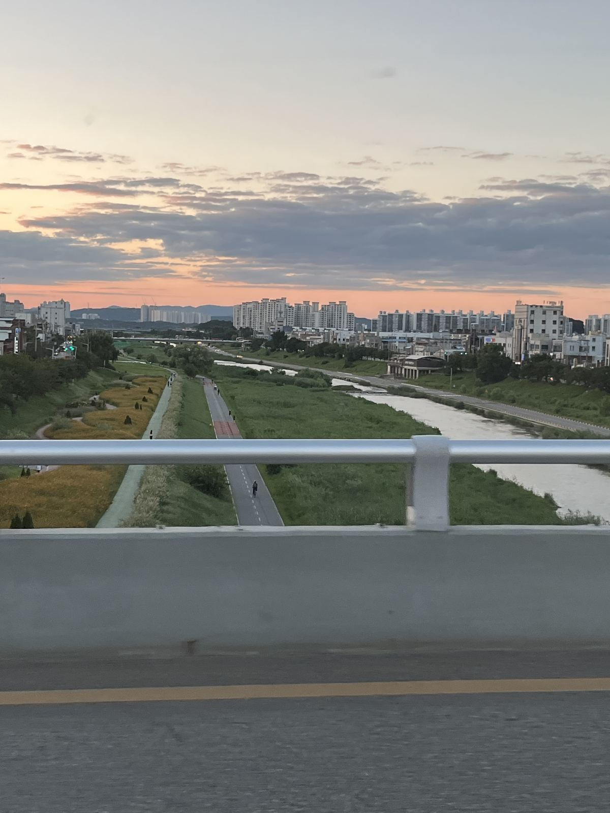
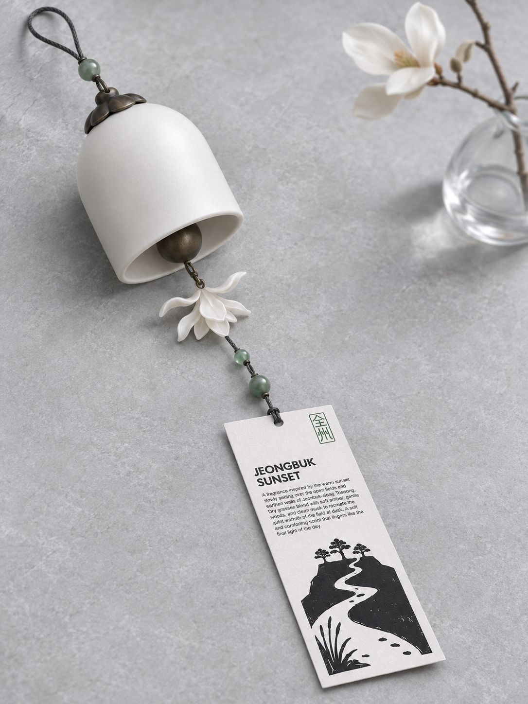
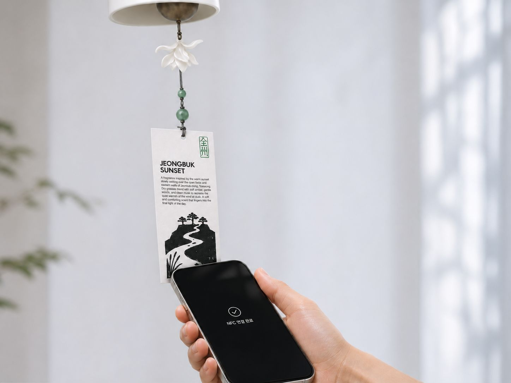

청주를 담은 풍경
풍담風談
감각으로 간직하는 여행의 한 조각
風談
눈으로 담았던 풍경을 넘어,
눈으로 담았던 풍경을 넘어,
감각으로 간직하는 여행의 한 조각.
바람이 스칠 때 울리는 맑은 소리와 그 뒤를 따라 번지는 향이, 당신을 다시 그때의 여행길로 데려갑니다.
- 01보다
- 02듣다
- 03맡다
- 04기록하다




OBJECT
청주의 기억을 거는 풍경
도자 종과 백목련 장식, 그리고 청주의 장소를 담은 카드 한 장. 카드에 휴대폰을 가까이 대면 그 장소의 이야기가 다시 열립니다.
바람이 불 때마다, 다시 청주.